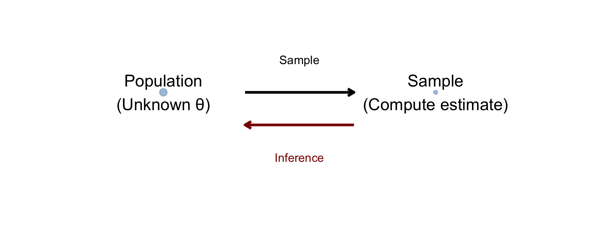
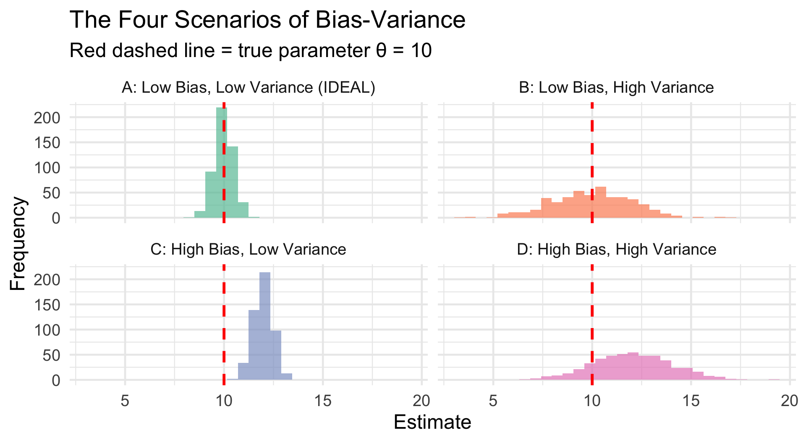
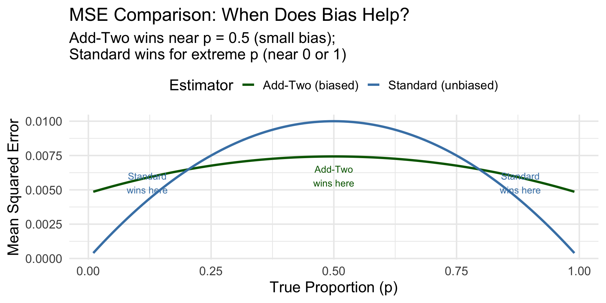
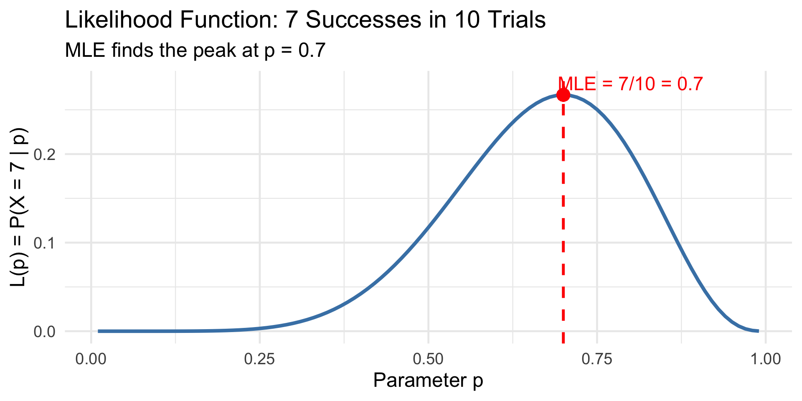
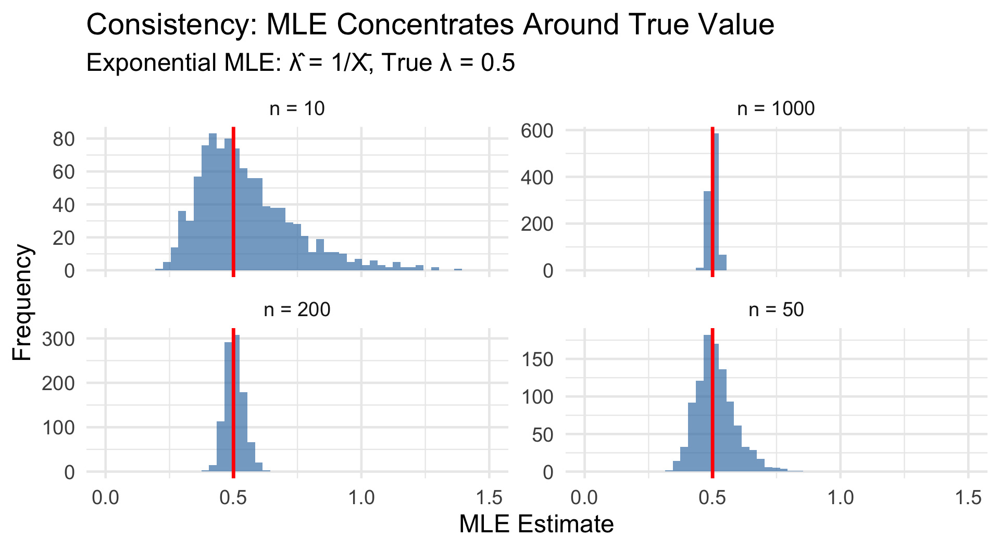
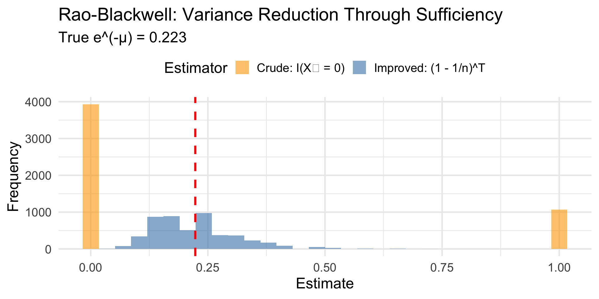

Review: Point Estimation (Lessons 1-5)
2001-03-01
Today: Tie it all together and review key concepts.
We observe data \(X_1, X_2, \ldots, X_n\) from some distribution with unknown parameter \(\theta\). Usually they are identically and independently distributed (i.i.d.), so they make a “random sample.”
The Question: How do we learn about \(\theta\) from the data?

Question 1: How do we construct estimators?
Question 2: How do we evaluate estimators?
Question 3: How do we find the best estimator?
Key Definitions
The key insight: MSE = Variance + Bias²
This means a biased estimator can be better than an unbiased one if its variance is low enough!

Scenario: Estimating the true cure rate \(p\) of a new cancer treatment.
Two estimators:
Understanding the “Add-Two” Estimator: The Intuition
What does it do? It acts like you observed 2 extra successes and 2 extra failures before seeing the data.
\[\hat{p}_2 = \frac{X + 2}{n + 4} = \frac{\text{successes} + 2}{\text{trials} + 4}\]
Why +2 in numerator and +4 in denominator?
The Problem with Standard Estimator:
How Add-Two Helps:
Bayesian Connection
The add-two estimator is the posterior mean under a Uniform(0,1) prior on \(p\). It incorporates prior belief that extreme values of \(p\) (near 0 or 1) are less likely.
For \(p = 0.2\) (a fairly extreme value), let’s compare the two estimators:
# Compare standard estimator vs. "add-two" estimator
true_p <- 0.2 # True cure rate (rare disease)
n <- 25
n_sims <- 5000
prop_sim <- tibble(sim = 1:n_sims) |>
mutate(
x = rbinom(n_sims, size = n, prob = true_p),
p_standard = x / n, # Unbiased
p_addtwo = (x + 2) / (n + 4) # Biased toward 0.5
)
# Compare properties
prop_sim |>
summarize(
`Standard: Mean` = mean(p_standard),
`Standard: Bias` = mean(p_standard) - true_p,
`Standard: Variance` = var(p_standard),
`Standard: MSE` = mean((p_standard - true_p)^2),
`Add-Two: Mean` = mean(p_addtwo),
`Add-Two: Bias` = mean(p_addtwo) - true_p,
`Add-Two: Variance` = var(p_addtwo),
`Add-Two: MSE` = mean((p_addtwo - true_p)^2)
) |>
pivot_longer(everything()) |>
separate(name, into = c("Estimator", "Metric"), sep = ": ") |>
pivot_wider(names_from = Estimator, values_from = value) |>
mutate(across(where(is.numeric), ~round(., 5)))# A tibble: 4 × 3
Metric Standard `Add-Two`
<chr> <dbl> <dbl>
1 Mean 0.199 0.241
2 Bias -0.00101 0.0405
3 Variance 0.0065 0.00483
4 MSE 0.0065 0.00647At \(p = 0.2\), the MSEs are similar — we’re in the “crossover” region where neither dominates!

Key insight: The add-two estimator wins near \(p = 0.5\) where its bias is small, but loses at extreme \(p\) values where shrinkage toward 0.5 hurts!
| Property | Definition | Why It Matters |
|---|---|---|
| Unbiased | \(E(\hat{\theta}) = \theta\) | No systematic error |
| Low Variance | \(\text{Var}(\hat{\theta})\) small | Precise estimates |
| Consistent | \(\hat{\theta} \xrightarrow{P} \theta\) | Works with enough data |
| Efficient | Achieves CRLB | Best among unbiased |
The Hierarchy of Goals
Method of Moments (MME):
Maximum Likelihood (MLE):
Method of Moments: The Algorithm
Example: Exponential(\(\lambda\))
Maximum Likelihood: The Algorithm
Intuition: The MLE asks “What parameter value makes our observed data most probable?”

The MLE finds where the likelihood is highest — the most “likely” parameter value.
| Distribution | MLE | MME | Same? |
|---|---|---|---|
| Bernoulli(\(p\)) | \(\bar{X}\) | \(\bar{X}\) | ✓ |
| Normal(\(\mu\), known \(\sigma^2\)) | \(\bar{X}\) | \(\bar{X}\) | ✓ |
| Exponential(\(\lambda\)) | \(1/\bar{X}\) | \(1/\bar{X}\) | ✓ |
| Poisson(\(\mu\)) | \(\bar{X}\) | \(\bar{X}\) | ✓ |
| Uniform[0, \(\theta\)] | \(\max(X_i)\) | \(2\bar{X}\) | ✗ |
Key Insight
When they differ, the MLE is usually preferred (especially for large \(n\)) because it’s asymptotically efficient.
Three Key Properties of MLEs (Devore 7.2)
Invariance: If \(\hat{\theta}\) is the MLE of \(\theta\), then \(g(\hat{\theta})\) is the MLE of \(g(\theta)\)
Consistency: \(\hat{\theta}_{MLE} \xrightarrow{P} \theta\) as \(n \to \infty\)
Asymptotic Efficiency: For large \(n\), \(\hat{\theta}_{MLE} \dot\sim N\left(\theta, \frac{1}{nI(\theta)}\right)\)
In plain English:
Definition: Consistency (Devore 7.1, Chihara 6.3.4)
An estimator \(\hat{\theta}_n\) is consistent if: \[P(|\hat{\theta}_n - \theta| < \epsilon) \to 1 \quad \text{as } n \to \infty\]
for any \(\epsilon > 0\), no matter how small.
Intuition: With enough data, your estimate will be arbitrarily close to the truth.
Alternative criterion: \(\text{MSE}(\hat{\theta}_n) \to 0\) as \(n \to \infty\)
This requires:

As \(n\) increases, the distribution “shrinks” around the truth!
Definition (Devore 7.1)
The MVUE of \(\theta\) is the estimator that:
Why not just minimize MSE?
Theorem: CRLB (Devore 7.4)
For any unbiased estimator \(T\) of \(\theta\): \[\text{Var}(T) \geq \frac{1}{nI(\theta)}\]
where \(I(\theta)\) is the Fisher Information: \[I(\theta) = E\left[-\frac{\partial^2}{\partial \theta^2} \ln f(X; \theta)\right]\]
Interpretation:
Key Insight: Fisher Information measures how much the log-likelihood changes as \(\theta\) changes.
High Fisher Information:
Low Fisher Information:
Definition: Efficiency
An unbiased estimator \(T\) is efficient if: \[\text{Var}(T) = \frac{1}{nI(\theta)} = \text{CRLB}\]
More generally, the efficiency of \(T\) is: \[\text{Efficiency}(T) = \frac{\text{CRLB}}{\text{Var}(T)} \leq 1\]
Example: Sample median for normal data
| Distribution | Parameter | MVUE | CRLB | Efficient? |
|---|---|---|---|---|
| Bernoulli(\(p\)) | \(p\) | \(\bar{X}\) | \(\frac{p(1-p)}{n}\) | ✓ |
| Normal(\(\mu\), known \(\sigma^2\)) | \(\mu\) | \(\bar{X}\) | \(\frac{\sigma^2}{n}\) | ✓ |
| Poisson(\(\mu\)) | \(\mu\) | \(\bar{X}\) | \(\frac{\mu}{n}\) | ✓ |
| Exponential(\(\lambda\)) | \(\lambda\) | \(\frac{n-1}{\sum X_i}\) | \(\frac{\lambda^2}{n}\) | ✗ |
Note on Exponential(\(\lambda\)): Why No Efficient Unbiased Estimator Exists
For the exponential distribution with rate parameter \(\lambda\):
Since \(\frac{\lambda^2}{n-2} > \frac{\lambda^2}{n}\), the MVUE does not achieve the CRLB. No unbiased estimator can!
Alternatively: For the mean parameter \(\mu = 1/\lambda\), the sample mean \(\bar{X}\) is the efficient MVUE.
Note on Uniform[0, \(\theta\)]
For Uniform[0, \(\theta\)], the CRLB doesn’t apply (support depends on \(\theta\)), yet efficient estimation is still possible via \(\frac{n+1}{n}\max(X_i)\).
Students often ask: “Why do we need sufficient statistics?”
Answer: Sufficient statistics answer a fundamental question:
What is the minimum amount of information we need to keep from our data to estimate \(\theta\)?
If a statistic \(T\) is sufficient, then:
Scenario: You observe \(n\) coin flips and want to estimate \(p\) (probability of heads).
Raw data: H, T, H, H, T, H, T, T, H, H (10 flips)
Summary: 6 heads out of 10
Question: Does knowing the exact sequence (HTHHTHTTHH) tell you more about \(p\) than just knowing “6 out of 10”?
Answer: No! The total number of heads captures all the information about \(p\).
This is why \(T = \sum X_i\) is sufficient for \(p\) in the Bernoulli model.
Definition (Devore 7.3)
A statistic \(T = t(X_1, \ldots, X_n)\) is sufficient for \(\theta\) if:
\[P(X_1 = x_1, \ldots, X_n = x_n \mid T = t) \text{ does not depend on } \theta\]
In words: Given the value of \(T\), the conditional distribution of the data doesn’t involve \(\theta\).
Intuition: Once you know \(T\), learning the raw data tells you nothing new about \(\theta\).
Computing conditional distributions is hard. The factorization theorem gives us a shortcut!
Theorem (Neyman-Fisher Factorization)
\(T\) is sufficient for \(\theta\) if and only if the joint pdf/pmf can be written as: \[f(x_1, \ldots, x_n; \theta) = g(T; \theta) \cdot h(x_1, \ldots, x_n)\]
where:
Strategy: Look for parts involving \(\theta\) and group them with a function of the data.
Setup: \(X_1, \ldots, X_n \stackrel{iid}{\sim} \text{Poisson}(\mu)\)
Joint pmf: \[f(x_1, \ldots, x_n; \mu) = \prod_{i=1}^n \frac{e^{-\mu}\mu^{x_i}}{x_i!} = \frac{e^{-n\mu}\mu^{\sum x_i}}{\prod x_i!}\]
Factor it: \[= \underbrace{e^{-n\mu}\mu^T}_{g(T; \mu)} \cdot \underbrace{\frac{1}{\prod x_i!}}_{h(x_1, \ldots, x_n)}\]
where \(T = \sum x_i\).
Result
\(T = \sum_{i=1}^n X_i\) is sufficient for \(\mu\).
Setup: \(X_1, \ldots, X_n \stackrel{iid}{\sim} \text{Uniform}[0, \theta]\)
Joint pdf: \[f(x_1, \ldots, x_n; \theta) = \frac{1}{\theta^n} \cdot I(0 \leq \min(x_i)) \cdot I(\max(x_i) \leq \theta)\]
Factor it: \[= \underbrace{\frac{1}{\theta^n} I(\max(x_i) \leq \theta)}_{g(T; \theta)} \cdot \underbrace{I(\min(x_i) \geq 0)}_{h(\mathbf{x})}\]
Key Result
\(T = \max(X_i)\) is sufficient for \(\theta\).
Notice: \(\bar{X}\) is NOT sufficient for the uniform distribution!
# Two datasets with same mean but different information about θ
data_A <- c(2, 4, 6, 8) # mean = 5, max = 8
data_B <- c(1, 4, 5, 10) # mean = 5, max = 10
cat("Dataset A: mean =", mean(data_A), ", max =", max(data_A), "\n")Dataset A: mean = 5 , max = 8 Dataset B: mean = 5 , max = 10 Both have \(\bar{X} = 5\), but:
Knowing only \(\bar{X}\) loses critical information about \(\theta\)!
| Distribution | Parameter(s) | Sufficient Statistic(s) |
|---|---|---|
| Bernoulli(\(p\)) | \(p\) | \(\sum X_i\) |
| Poisson(\(\mu\)) | \(\mu\) | \(\sum X_i\) |
| Exponential(\(\lambda\)) | \(\lambda\) | \(\sum X_i\) |
| Normal(\(\mu\), known \(\sigma^2\)) | \(\mu\) | \(\bar{X}\) |
| Normal(\(\mu\), \(\sigma^2\)) | \((\mu, \sigma^2)\) | \((\bar{X}, S^2)\) or \((\sum X_i, \sum X_i^2)\) |
| Uniform[0, \(\theta\)] | \(\theta\) | \(\max(X_i)\) |
Three Key Connections
Theorem (Rao-Blackwell)
If \(U\) is any unbiased estimator of \(\tau(\theta)\) and \(T\) is sufficient for \(\theta\), then: \[U^* = E(U \mid T)\]
is also unbiased, and \(\text{Var}(U^*) \leq \text{Var}(U)\).
In plain English: Conditioning on a sufficient statistic never hurts and usually helps.
Practical implication: If your estimator doesn’t use all the information in \(T\), you can always improve it!
Problem: Estimate \(e^{-\mu} = P(\text{no defects})\) for Poisson(\(\mu\)) data.
Crude estimator: \(U = I(X_1 = 0)\) (is the first observation zero?)
set.seed(42)
mu_true <- 1.5
n <- 10
n_sims <- 5000
# Simulation
rb_sim <- tibble(sim = 1:n_sims) |>
mutate(
data = map(sim, \(s) rpois(n, mu_true)),
T_sum = map_dbl(data, sum),
crude_U = map_dbl(data, \(d) as.numeric(d[1] == 0)),
improved_U = (1 - 1/n)^T_sum
)
rb_sim |>
summarize(
`True e^(-μ)` = exp(-mu_true),
`Crude: E[U]` = mean(crude_U),
`Crude: Var` = var(crude_U),
`Improved: E[U*]` = mean(improved_U),
`Improved: Var` = var(improved_U)
) |>
pivot_longer(everything()) |>
mutate(value = round(value, 4))# A tibble: 5 × 2
name value
<chr> <dbl>
1 True e^(-μ) 0.223
2 Crude: E[U] 0.214
3 Crude: Var 0.168
4 Improved: E[U*] 0.223
5 Improved: Var 0.0082The Rao-Blackwell estimator has much lower variance!

Definition: Complete Statistic
\(T\) is complete if for any function \(g\): \[E_\theta[g(T)] = 0 \text{ for all } \theta \implies P_\theta(g(T) = 0) = 1 \text{ for all } \theta\]
Intuition: The only unbiased estimator of zero based on \(T\) is the zero function itself.
Lehmann-Scheffé Theorem
If \(T\) is complete and sufficient, and \(h(T)\) is unbiased for \(\tau(\theta)\), then \(h(T)\) is the unique MVUE of \(\tau(\theta)\).
| Concept | Formula |
|---|---|
| Bias | \(E(\hat{\theta}) - \theta\) |
| MSE | \(\text{Var}(\hat{\theta}) + \text{Bias}^2\) |
| Standard Error | \(\sqrt{\text{Var}(\hat{\theta})}\) |
| Fisher Information | \(I(\theta) = E[-\ell''(\theta)]\) |
| CRLB | \(\frac{1}{nI(\theta)}\) |
| Efficiency | \(\frac{\text{CRLB}}{\text{Var}(\hat{\theta})}\) |
| Consistency | \(\text{MSE} \to 0\) as \(n \to \infty\) |
| Distribution | MLE | MME | Sufficient Stat | MVUE of Mean |
|---|---|---|---|---|
| Bernoulli(\(p\)) | \(\bar{X}\) | \(\bar{X}\) | \(\sum X_i\) | \(\bar{X}\) |
| Poisson(\(\mu\)) | \(\bar{X}\) | \(\bar{X}\) | \(\sum X_i\) | \(\bar{X}\) |
| Exponential(\(\lambda\)) | \(1/\bar{X}\) | \(1/\bar{X}\) | \(\sum X_i\) | \(\bar{X}\) (for mean) |
| Normal(\(\mu\), \(\sigma^2\)) | \(\bar{X}\), \(\frac{1}{n}\sum(X_i-\bar{X})^2\) | Same | \((\bar{X}, S^2)\) | \(\bar{X}\) |
| Uniform[0, \(\theta\)] | \(\max(X_i)\) | \(2\bar{X}\) | \(\max(X_i)\) | \(\frac{n+1}{n}\max(X_i)\) |
Pitfall 1: “Unbiased is always better”
Reality: A biased estimator with low variance can have lower MSE!
Pitfall 2: “MLE = Sufficient Statistic”
Reality: MLE is a function of sufficient statistics, not the sufficient statistic itself.
Pitfall 3: “\(\bar{X}\) is always sufficient”
Reality: \(\bar{X}\) is sufficient for location parameters (normal, exponential) but NOT for scale parameters like in Uniform[0, \(\theta\)].
Thank you!
Review - Point Estimation